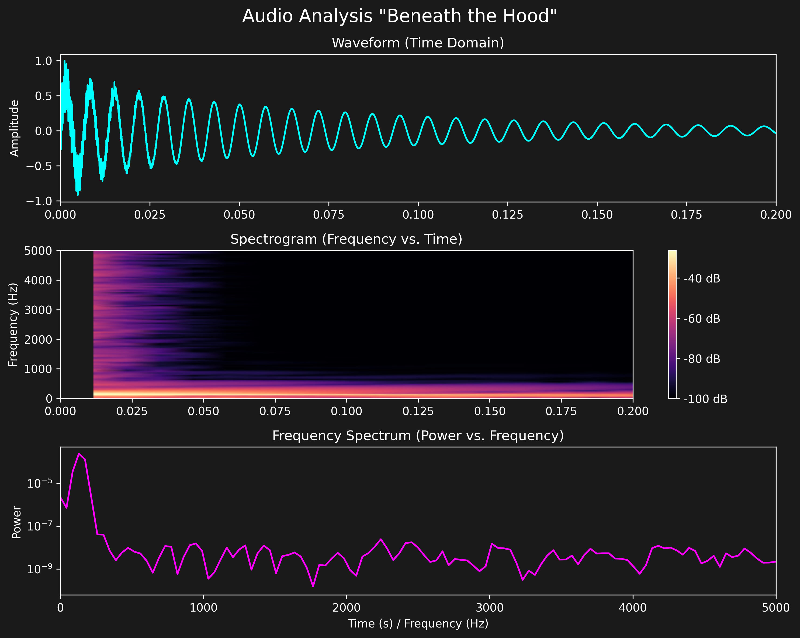
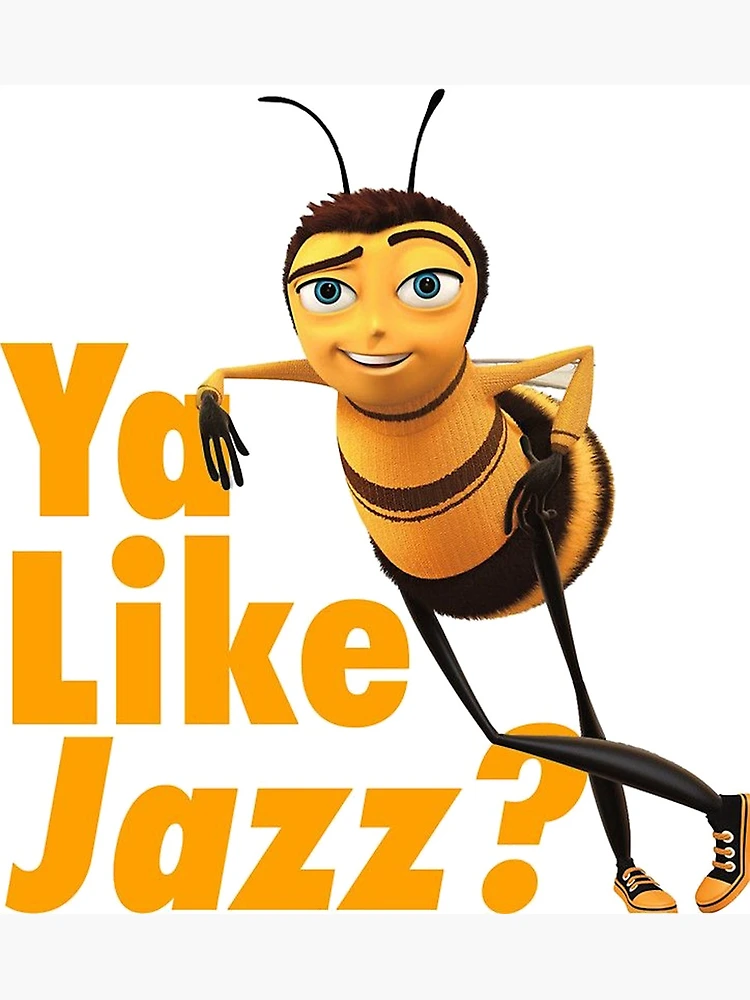

I have learned so much while taking Computational Sound, and this project is the culmination of it. Live-coding is so much fun but it definitely has a learning curve (those 3 minutes are terrifying). My project was made with the intent of making Strudel more accessible to people who may not be as comfortable live coding, especially the musical notation side!

To truly understand what's happening beneath the hood, we can visualize the generated sound waves. The plot above shows three distinct perspectives of our algorithmic hits: the time-domain waveform (how the amplitude changes over time), the frequency spectrogram (how different frequencies evolve during the hit), and the power spectral density. The plots and my following explanations are based on the kick drum.

The top plot shows the sound wave in the time domain. This is what the microphone picks up. This is a direct visualization of the output of my Gain Nodes. One important tid-bit was the use of a Dynamic Compressor. In an actual live coding session there will be overlapping noises and loud hits. The compressor makes it so any overlapping waveforms that combine over 1.0 (or my -12 dB threshold) that may cause clipping, have their peaks squashed so the waveform is smooth (like jazz).This is the heat map of the sound. The brightness represents the intensity in decibels of that frequency at that exact moment. This can visually map certain sounds to how they feel when played. The bass drum hit (that big thump) has a bright curve dropping from higher to lower frequencies. The bright vertical band at the beginning represents the BIG initial click of the hit (the "tk"), and the big orange mushy part is the body of the drum.
This is a representation of the average energy of each frequency. The huge spike in low frequencies is the bass drum thump and the gradual slope downwards shows it decaying into higher frequencies. This graph shows how my project maintains tonal balance of audio during algorithmic composition, something that can be very hard to do when programming music. I used the Master Gain to evenly lower the power across the entire spectrum so that those massive localized frequency spikes don't blow out the speakers.This is essentially the Fourier Transform of my signal.
The best way to test this without any software would be to set up a simple API server that serves Strudel code, which can be triggered to play automatically when a hit is detected. That would be the true test of this project! I plan to continue working on this. Pitchy.js was a little more complicated than I thought, so it was much harder to debug and generate the synth. WebAudio instruments and adjustment is also not the most well-documented thing in the world. Overall I think I'm proud of how this project turned out. Computational Sound, how I love you!!!
Back to Home